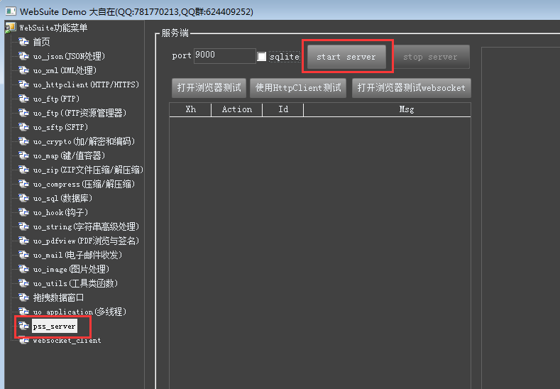
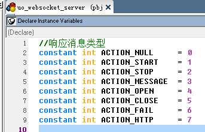
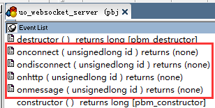

PowerScriptServer(websocke 和 webapi)服务使用说明
基于uo_websocket_server对象，实现了 web server 和 websocket server的 PowerScriptServer(以下简称PSS)发布了。
一、有哪些用处
需要实现设备 websocket 对接数据，或者提供 web server静态访问，或者提供 web api 数据接口（JSON，XML等），往往大家第一印象就是：我要安装IIS、nginx、apache…，我要安装tomcat、weblogic …，我要学习asp、jsp、c#、java、go、php ……总是很伤脑筋，一大堆要配置，一大堆要学习，对一个 PBer 来说，痛苦得很。
现在，不用如此烦恼了，因为PSS出场了。
1. PSS能干什么？它同时支持web server 和 websocket server。只要你会写PB程序，就可以使用 websuite 套件，用你的PB代码(PowerScript)轻松写出你的websocket server或 web server。只要有PowerBuilder就行，不再需要考虑IIS、布署、C#、JAVA这些伤脑筋的东西，仅仅PB，就能搞定一切。
2. PSS如何布署？想多了，不需要你想的那些布署。就和普通PB程序一样，你写好程序，需要你做的仅仅是：编译成 EXE程序，运行你的EXE程序，一切就搞定了。
二、如何使用 PSS

（一）先看一下DEMO
开门见山第一步，加入QQ群，624409252，共享文件里下载 demo，文件名称开头是PB_Json_httpclient_xxxxxx.xxx。用PB打开DEMO，左边选中 websocket_server，右边设置好端口号，点击 “websocket start”按钮，服务就启动了。这时候可以用浏览器、httpclient访问web server 服务，示例里有静态服务和 webapi 接口服务示例。对于各自业务，你自己可以有更加灵活多样的实现。
PSS同时也支持 websocket server,可以百度一个在线的基于浏览器的websocket 客户端（百度里搜索，点开就行），地址填入“ws://127.0.0.1:9000”，就可以用浏览器连接到ws服务，并发送和接收消息。
（二）如何从头开始，构建自己的服务。
1.创建一个窗口，切换到 Instance Variables，写入
uo_websocket_server wsserver
2.窗口上放一个启动按钮，按钮里写入代码
If not isvalid(wsserver ) then create uo_websocket_server
uo_json jsParam
jsParam = create uo_json
//监听端口
jsParam.set("port",long(sle_port.text))
//接收通知的窗口句柄
jsParam.set("hwnd",handle(parent))
//接收通知的号，以上面指定的窗口other事件里，判断 message.number = 这里的消息号，即是收到通知
jsParam.set("messageid",ii_msg)
//指定HTML静态内容的根目录，可以是相对目录，也可以是绝对目录
jsParam.set("root",".\root\")
//响应线程事件的对象
//这个对象里面至少有4个事件 onhttp,onconnect,ondisconnect,onmessage ，分别用于响应 http 请求 ,ws 连接，ws 断开,ws消息,这4个事件，都有一个参数 ulong handle ，是一个消息句柄，用于操作消息
jsParam.set("object","nvo_websocket_reponse")
//线程数
jsParam.set("threadcount",16)
wsserver.start(jsParam) // 使用jsParam作为参数启动服务
destroy jsParam
这时候就可以连接到服务了
3.实现请求响应
启动时有一个参数是响应对象jsParam.set("object","nvo_websocket_reponse")，那么，我们就需要从 uo_websocket_server 继承一个对象，并保存为"nvo_websocket_reponse"。接下来，我们的多线程响应就在"nvo_websocket_reponse"里面实现。
请注意，我们的响应是多线程的，所以，"nvo_websocket_reponse"这个对象实际在内存里实例数是和线程数一样的，如果是16个线程，"nvo_websocket_reponse"这个对象在内存里就会有16个实例。
在"nvo_websocket_reponse"的 onhttp 事件里写入：
uo_map header
header = create uo_map
header.set("Content-Type","text/html; charset=utf-8")
SetResponse(id,”hello world” ,header)
Destroy header
保存后，启动服务，在浏览器里输入 http://127.0.0.1:9000 ，就可以看到输出内容了”hello world”。
三、服务实现机制
PSS服务是多线程响应机制。首先，在PB主线程里启动服务，这本身就是一个线程，启动时要指定服务线程数，如果jsParam.set("threadcount",16)那就是指定了16个服务响应线程，加上PB启动线程，那么就至少有17个线程处理活动中。作为PBer，知道它是这样就行了，具体线程不需要去干涉或调度。
PB的线程在运行期间，互相之间是不共享数据的，也就是在一个程里不能访问另一个线程的变量。为解决这个问题，可以使用uo_websocket_server 里的 SetVar/GetVar 函数来定义和访问线程，这里定义的变量是可以跨线程访问的。
"nvo_websocket_reponse"作为响应线程，它处理完请求，实际就任务就完成了。但有时候，我们需要调试，需要观察日志，所以，需要主线程有内容显示。这个显示是通过windows消息机制来实现。具体是在uo_tabpage_ws_server 的 other 里取得消息，消息号分别对应：

然后分别触发 onstart、 onstop、 onconnect 、 ondisconnect 、 onmessage 、onhttp事件。
1. onstart服务成功启动后触发
2. onstop服务停止时触发
3. onconnect 一个 websocket 客户端连接时触发
4. ondisconnect 一个websocket客户端断开时触发
5. onmessage 一个 websocket 发来消息时触发
6. onhttp 有web请求时触发
以上事件，主要是给PBer 记录日志，或者显示调试信息使用，不要在这里面做出耗时的响应。耗时响应都应该放到 "nvo_websocket_reponse"线程对象里面去处理。
三、主要API 对象及参数说明
（一）uo_websocket_server 对象

onconnect 一个 websocket 客户端连接时触发
ondisconnect 一个websocket客户端断开时触发
onmessage 一个 websocket 发来消息时触发
onhttp 有web请求时触发
这4个事件，要在它的继承对象"nvo_websocket_reponse"里响应，实现线程应答。
函数声明。
1.//启动 websocket/http 服务
function boolean Start(readonly uo_json jsParam) system library "PbJson.dll" alias for "wsStartServer"
2.//停止 websocket/http 服务
function boolean Stop() system library "PbJson.dll" alias for "wsStopServer"
3.//根据事件提供的ID号，取回请求消息，返回的请求信息，都存在JSON里面，可以在界面上显示这个JSON，观察请求内容，方便调试。
function boolean GetMessage(ulong messageID,ref uo_json js) system library "PbJson.dll" alias for "wsGetMessageServer"
4.//根据事件提供的ID号，发送一个 websocket 消息。仅用于 websocket server向客户端发送消息
function boolean SendMessage(ulong messageID,readonly blob msg) system library "PbJson.dll" alias for "wsSendMessageServer"
5.//根据事件提供的ID号，对相应请求设置相应的响应内容和格式头。用于 webapi/http 响应客户端请求
function boolean SetResponse(ulong messageID,readonly uo_json json,readonly uo_map header) system library "PbJson.dll" alias for "wsSetResponse"
function boolean SetResponse(ulong messageID,readonly uo_xml data,readonly uo_map header) system library "PbJson.dll" alias for "wsSetResponse"
function boolean SetResponse(ulong messageID,readonly blob data,readonly uo_map header) system library "PbJson.dll" alias for "wsSetResponse"
function boolean SetResponse(ulong messageID,readonly string data,readonly uo_map header) system library "PbJson.dll" alias for "wsSetResponse"
6.//根据事件提供的ID号，移除缓存在内存中的请求包。如果不删除请求包，服务会自动在5分钟后删除。建议手工删除不用的消息包，避免内存短时间内快速增长。
subroutine RemoveMessage(ulong messageID) system library "PbJson.dll" alias for "wsRemoveMessageServer"
7.//跨线程变量访问,这些共用变量是进程内全局共享
//可以设置超时时间，即超过多少毫秒没有访问后，判断此变量即为过期。
//变量过期特性，对于一些特殊类型的变量尤其有用，例如登录超时、二维码付款有效性限制
subroutine SetVar(readonly string varName,readonly any value) system library "PbJson.dll" alias for "wsSetVar"
subroutine SetVar(readonly string varName,readonly any value,long timeout) system library "PbJson.dll" alias for "wsSetVar"
//根据变量名取变量值
function any GetVar(readonly string varName) system library "PbJson.dll" alias for "wsGetVar"
//根据变量名判断此变量是否已过期，即自动根据 SetVar 设置的超时时间，判断是否已经过 timeout 没有访问过。每次 SetVar/GetVar 都是自动更新它的最后一次访问时间。
function boolean VarExpired(readonly string varName) system library "PbJson.dll" alias for "wsVarExpired"
//删除一个全局变量
subroutine RemoveVar(readonly string varName) system library "PbJson.dll" alias for "wsRemoveVar"
//获取一个不会重复的字符串，确保唯一性
function string GetNextID() system library "PbJson.dll" alias for "wsGetNextID"
四、其他特别说明
Web端响应，对时效性要求比较高，所以要对业务做好规划，对SQL语句做好优化。另外，处理字符串时建议使用 uo_string 对象，数据库连接，增、删、改、查时使用 uo_database、uo_recordset 对象，这些都比PB直连的效率要高，使用SQL生成JSON语句时也更方便。同时也支持多结果集。
五、开发授权
1.本模块作为个人用户使用，提供单线程响应，免费使用。
2.作为商业用户需要多线程，授权费用1688元（不开票）。
3.作为商业用户需要多线程，授权费用3688元（需要开票）。
4.已拥有 websuite任何曾经授权，本次只增加 PSS 部分授权，授权费 688元。
大自在 QQ:781770213
2020 年8月